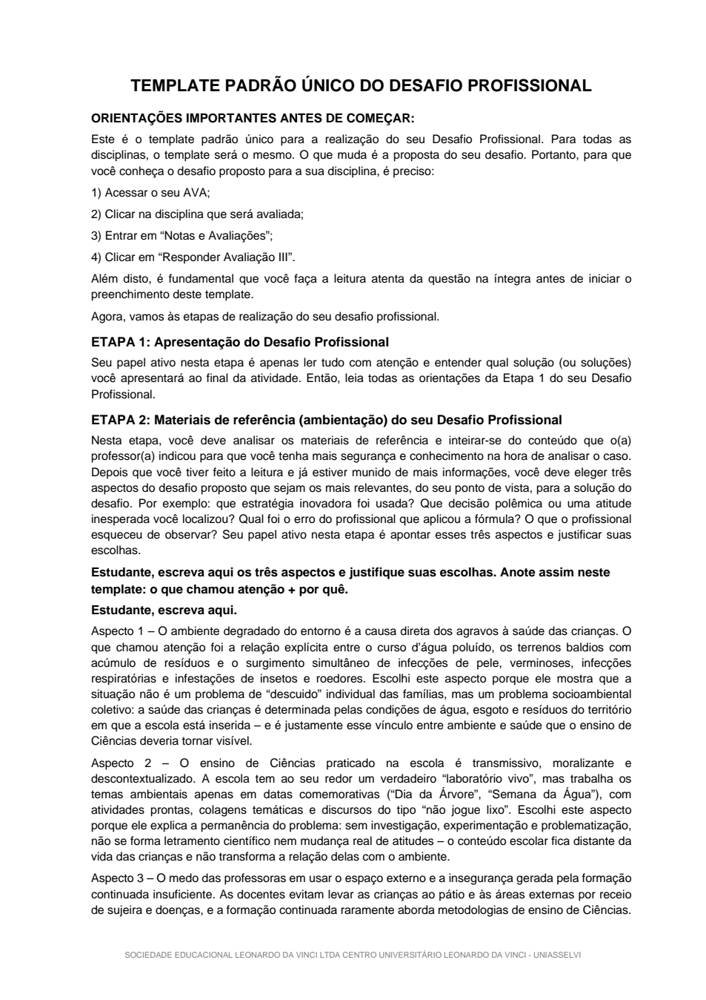
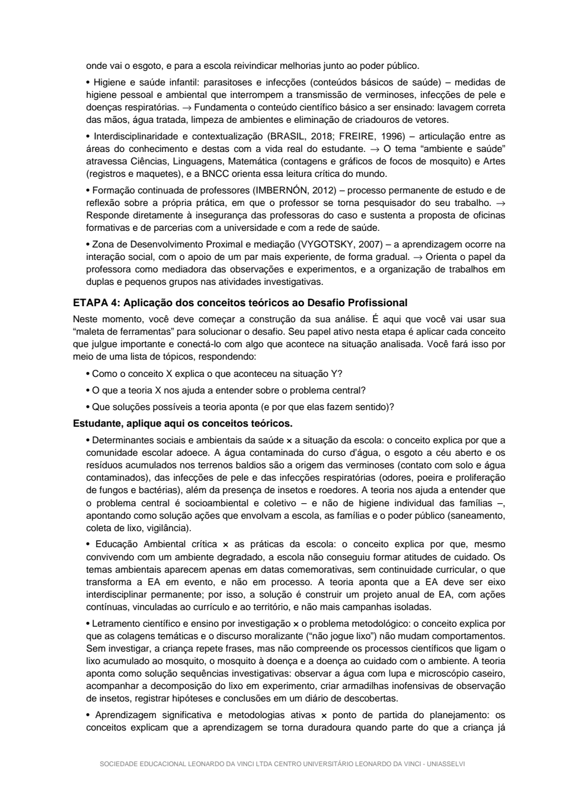

📘 Meu Desafio Profissional — Metodologia e Conteúdos Básicos de Ciências Naturais e Saúde Infantil
UNIASSELVI (PED79) · Template Padrão Único preenchido: Etapas 2, 3, 4 e Memorial Analítico (Etapa 5).
Abaixo estão as 6 páginas do trabalho completo. Role a tela para ler tudo.
Como entregar (2 passos):
- No campo “Resposta…” do AVA, cole o texto do Memorial Analítico (página 5 e 6 abaixo,
na parte “MEMORIAL ANALÍTICO”). São 5.480 caracteres — dentro do limite de 6.000.
Abrir o texto do memorial.
- Clique em “+ Selecionar um arquivo” e anexe o PDF do trabalho
(botão amarelo acima “Baixar o PDF do trabalho”).
📄 O trabalho completo — 6 páginas
PÁGINA 1 de 6 — Capa, Etapa 1 e início da Etapa 2

PÁGINA 2 de 6 — Etapa 2 (Aspecto 3) e Etapa 3 (conceitos)

PÁGINA 3 de 6 — Etapa 3 (fim) e Etapa 4 (aplicação dos conceitos)

PÁGINA 4 de 6 — Etapa 4 (fim) e Etapa 5 (instruções e rubrica)

PÁGINA 5 de 6 — MEMORIAL ANALÍTICO: resumo, contextualização e análise

PÁGINA 6 de 6 — Propostas de solução, conclusão, referências e autoavaliação

✅ Template UNIASSELVI preservado 100% (verificação palavra por palavra).
Desafio Profissional — Ciências Naturais e Saúde Infantil.